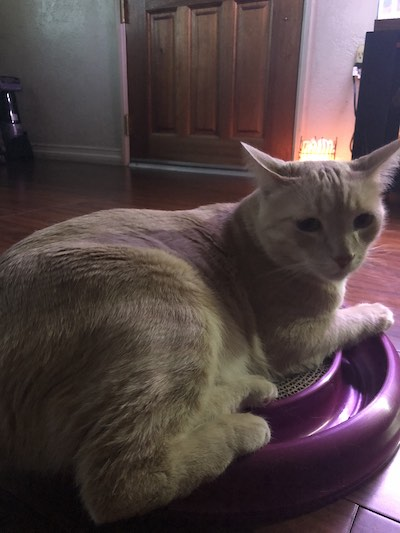

Witchcraft Page
This color is
turquoise
.
Toggle Dark Mode

The History of Witches: Part One - The Burning Times
The History of Witches: Part Two - Witches in Literature and Art
The History of Witches: Part Three - Witches in Horror Movies
Yale Courses - Witchcraft